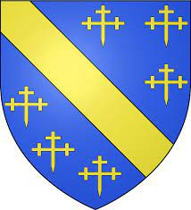

Antavla
24035465 Alesta of Mar
Blev ca 54 år.

Far:
Morggán of Mar
Född:
omkring 1156 Mar, Aberdeenshire, Scotland.
[1]
Död:
omkring 1210 Paisley Abbey, Scotland.
Barn med
24035464 High Steward Alan FitzWalter (1140? - 1204)
Barn:
Walter Stewart (1198 - 1246)
Personhistoria
Årtal
Ålder
Händelse
1156?
Födelse omkring 1156 Mar, Aberdeenshire, Scotland
[1]
1198
Sonen
12017732 High Steward of Scotland Walter Stewart
föds 1198
1204
Partnern
24035464 High Steward Alan FitzWalter
dör 1204-08-24 Dundonald, Ayrshire, Scotland
1210?
Död omkring 1210 Paisley Abbey, Scotland
Källor
[1]
Dennis Cutter